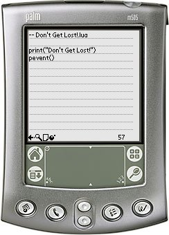

PluaED is a simple source code editor which can be used to create and edit Plua source code files. PluaED can be used instead of the built in Memo Pad application. PluaED however, is not limited to 4096 characters as Memo Pad is. The limit is PluaED is 65534 characters (if your device supports it).
PluaED is best used in conjunction with a Keyboard. PluaED has been tested with the CitiPack IR 502 Keyboard but should be compatible with any Palm OS keyboard.
PluaED supports version 1 as well as version 2 of Plua.
You can support this project by donating any amount to my Pay Pal account.
v1.5 (2006-03-01) The main list now updates properly when changing categories. v1.4 (2006-02-16) Changed versioning from vXrY to vX.Y. Brushed up on the icons. Fixed a subtle bug which made the TX crash from time to time. v1r3 (2005-10-27) Made the creation of new files a bit more robust. v1r2 (2005-09-09) Added support for Plua2. v1r1 (2005-07-04) First public release.